NovelAI の言葉の依頼（ChatGPT 向け）
- このページを ChatGPT に渡す（全部コピーして貼るか、ファイルを添付する）
- 一緒にポーズ一覧の画像を添付する：chatgpt_poses_01.png、chatgpt_poses_02.png、chatgpt_poses_03.png、chatgpt_poses_04.png、chatgpt_poses_05.png、chatgpt_poses_06.png、chatgpt_poses_07.png（ChatGPT はページの中の絵を見られないことがあるため）
- ChatGPT が返した JSON（
{から}まで）をコピーする - NovelAI の右下の枠 →「設定（ユーザー用）」→「ChatGPT の答えを取り込む」に貼って、「取り込む」を押す


1. お願いしたいこと
Game5 というブラウザのダンジョンゲームで、ヒロイン4人のモーションの1枚絵を NovelAI（V4.5、精密参照つき）で作っています。 プロンプトの大部分はこちらで決めてあり、下の「欄」だけが空欄です。欄を英語の言葉で埋めて、最後の「答えの形」の JSON で返してください。
2. こちらで入れてある言葉（欄には書かない）
- 共通：
1girl, solo, adult, mature female, full body, simple background, white background - キャラクターの見た目（例：アリア）：
orange hair, high ponytail, heavy bangs, grey-blue eyes, dark brown leather armor bodysuit, blue sleeves, black thighhighs, silver armored boots, silver gauntlets - コマごとの向き・姿勢・表情（例）：
from front, facing viewer, standing, arms behind back, closed mouth, clenched teeth, wrists together - 除外：子ども・文字・枠・手足の崩れ・血・傷などの言葉（こちらで入れてある）
送るときの並び：共通 → キャラクターの見た目 → キャラクターの欄 → 場面の種類の欄 → モーションの欄 → 向き・姿勢・表情。 姿勢は img2img の下絵（姿勢だけのマネキン）でも決めています。
3. 書き方
- 英語の言葉（NovelAI のタグの書き方）。カンマ区切り。1つの欄は 5〜25 語くらい
- 押さえているもの・つかむもの・揺らしているものは、必ず「何か・色・形・質感」まで書く。「tentacles」だけだと、色も種類もばらばらの物が出てくるため。下の魔物の表の色の言葉を使う
- 欄に書いた言葉は、その欄に入る全部のモーション・全部のコマに入る。1つのモーションにしか合わない言葉は書かない
- 向き・姿勢・キャラクターの見た目・人数は書かない（下絵とぶつかる）
- 登場人物は全員大人。子ども、血・痛み・傷、妊娠・出産、本物の虫は入れない
- 顔は「困っているが、まだ抗っている」方向（眉は寄せたまま、目は崩しきらない）
- 書くことがない欄は
""のまま
4. 魔物の見た目（色の言葉はここから）
ピンク〜肉色にしてよいのは、表でピンク系の種だけ。ほかは表の色にする。
| 名前 | 色 | 色の言葉 |
|---|---|---|
| 艶沼ナメクジ | ピンク〜桃紫 | translucent flesh-pink body, pink goo |
| 吸着羽虫 | ピンク〜肉色（小さな丸い体、透ける羽4枚、顔の下に丸い吸盤） | small round translucent flesh-pink body, four clear wings, round sucker |
| 泡吹き貝 | 真珠色の殻＋珊瑚色の体 | pearly cream spiral shell, coral-orange soft body, clear bubbles |
| 水妖 | 明るい水色＋白い泡の縁 | translucent bright aqua water body, white foam rim |
| 漂い霊 | 青白い半透明 | translucent pale cyan-white membrane body, cold glow |
| 絹輪ワーム | 象牙〜淡い肌色 | ivory-beige segmented body, white silk threads |
| 糸繰り蜘蛛 | 炭色＋白い糸 | charcoal-gray fuzzy body, white silk |
| 這い寄る手 | 青白い肌 | pale bluish-gray skin, short rounded nails |
| ルマネ胞子球 | からし色 | mustard-yellow fleshy spore ball, amber glow |
| 誘い茸 | 青緑に光る傘＋紫の襞 | glowing turquoise mushroom cap, wet violet gills |
| 石の番兵 | 灰色の石＋ひびの奥の桃色の肉 | gray stone golem, glowing pink flesh inside the cracks, moss |
| 粘花 | 象牙色の花弁、縁と奥が深紅 | thick ivory petals with deep crimson edges, amber nectar |
| 夢鱗蛾 | 琥珀色 | amber-brown furry moth, cream eye spots |
| 鏡面スライム | 銀＋水色の反射 | chrome-silver mirror slime, pale cyan reflections |
| 凝視の眼 | 白目＋紫の瞳、ワイン色の膜の羽 | huge white eyeball, violet iris, wine-red membrane wings |
| 灰冠の従者 | ピンク〜肉色＋灰色の冠（ボスを小さくした取り巻き） | small translucent flesh-pink slime, gray stone crown fragment |
| 灰冠の粘魔（ボス） | 肉色の半透明＋灰色の石の冠、紫の核 | translucent flesh-pink giant slime, gray stone crown, violet core |
5. 場面の種類の欄（words）
表は、その欄に入るモーション。ポーズの絵は、添付のポーズ一覧の同じ番号の画像にもある（モーションのキーの英字で探す）。色の線・塊が押さえられている所。「押さえ」の所を何が押さえているかを、欄に書きます。「ゲームでこれをする魔物」が何種類もある欄は、代表を1つ選んでください。
restrained 拘束されて立つ
書くこと：縛っているもの（何・色・形）
ゲームでこれをする魔物：床や壁から伸びる触手（ゲームの拘束）
| モーション | ポーズ（ポーズ一覧の番号） | 体勢 | 腕 | 脚 | 押さえ | 動き |
|---|---|---|---|---|---|---|
後ろ手に縛られて身をよじるM01 | 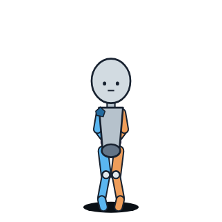 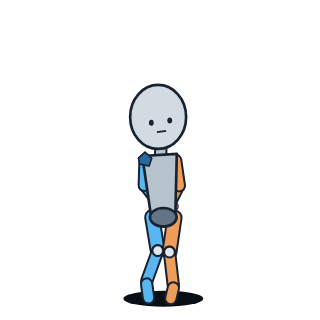 一覧 1 | 立つ | 後ろ手（手首を背中でまとめる） | 膝を閉じる | 両手首 | 体をよじる。膝を寄せる。かかとを交互に上げる。下を向く |
後ろ手に縛られて振りほどこうとするM02 |   一覧 1 | 立つ | 後ろ手 | 踏ん張る足は爪先立ち | 両手首 | 肩をひねって左右に振りほどこうとする。胸が前に出る |
両手首を上から吊られ、腕を引き下ろそうと力むM03 | 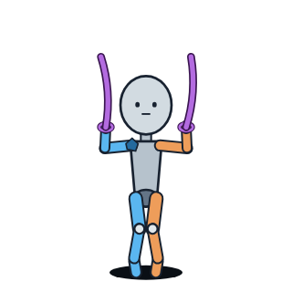  一覧 1 | 立つ | 両手を頭の上に上げる | 膝を少し曲げる | 両手首（上から吊る） | 腕を引き下ろそうと力む。負けると爪先立ちに引き上げられる |
後ろ手で、膝を左右へ引かれるM04 | 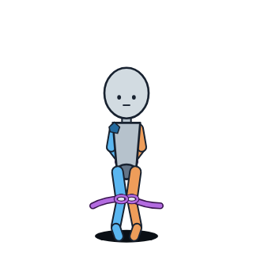  一覧 1 | 立つ | 後ろ手 | 閉じた膝 → 左右へ引かれる | 両手首・両膝（左右へ引く） | はじめ膝を寄せる → 最後は膝が外へ開いて腰が落ちる |
後ろ手で、膝を左右へ引かれたまま耐えるM05 |  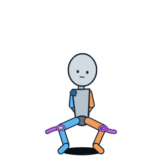 一覧 1 | 立つ | 後ろ手 | 左右に引かれたまま | 両手首・両膝（左右） | 膝が小さく震える |
全身がこわばって爪先立ち、そのあと力が抜けるM10 |   一覧 5 | 立つ | 後ろ手 | 足を開く | 両手首・両膝（左右） | 全身に力が入る → 爪先立ち、脚が突っ張る → 力が抜ける |
背中を反らせてこわばり、そのあと力が抜けるM11 | 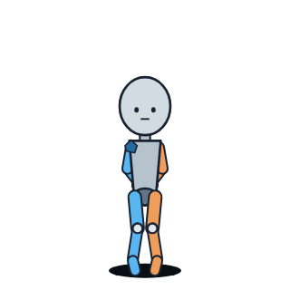 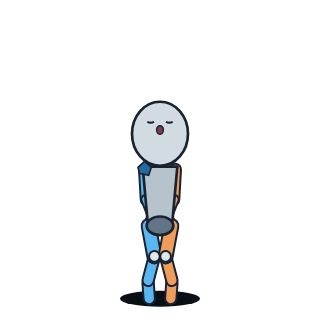 一覧 5 | 立つ | 後ろ手 | 立つ | 両手首 | 背中を反らす → 爪先立ち → 前へ崩れる |
力が抜けて、拘束にもたれてうなだれるM12 |  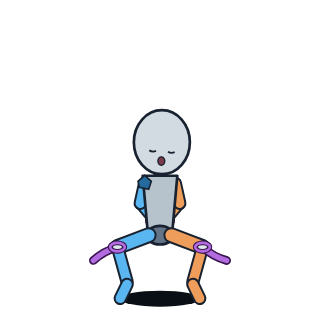 一覧 6 | 立ったままぶら下がる | 後ろ手 | 足を開く | 両手首・両膝（左右） | うなだれて肩で息をする |
力が抜けて前へ崩れ、うなだれるM13 | 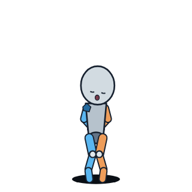 一覧 6 | 前へ崩れて立つ | 後ろ手 | 膝を内に寄せる | 両手首 | うなだれて肩で息をする |
脱力から我に返り、立ち直るM14 | 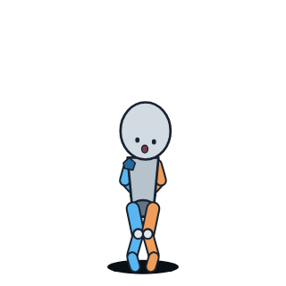 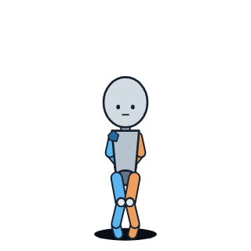 一覧 6 | 立つ | 後ろ手 | 立つ | 両手首 | 我に返る → 顔を上げて立ち直る |
前屈みで手首を前に縛られ、体を左右に揺らすM15 |  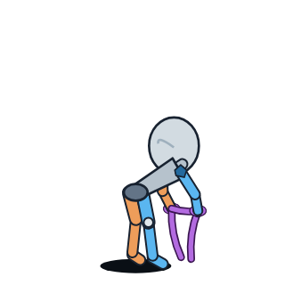 一覧 1 | 前屈み | 前へ伸ばす | 立ったまま | 両手首（前の低い所） | 体を左右に揺らす。肩ごしに振り返る（斜め後ろから見た絵） |
魔法使い：両方の義腕を頭の上でまとめて縛られ、魔法を封じられてもがくM64 | 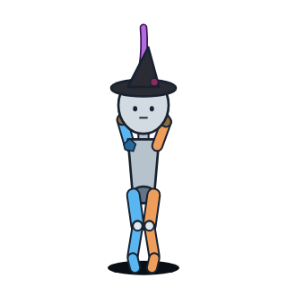  一覧 1 | 立つ | 両腕を頭の上で交差 | 立つ | 両手首（頭の上でまとめる） | 身をよじって引く。顔は平静を保とうとする |
restrained_sway 拘束されたまま体が揺れる
書くこと：縛っているもの（何・色・形）
ゲームでこれをする魔物：床や壁から伸びる触手（ゲームの拘束）
| モーション | ポーズ（ポーズ一覧の番号） | 体勢 | 腕 | 脚 | 押さえ | 動き |
|---|---|---|---|---|---|---|
後ろ手で、足を開いて立ったまま体が前後に揺れるM06 |  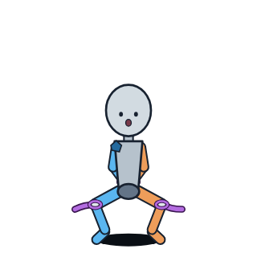 一覧 1 | 立つ | 後ろ手 | 足を開く | 両手首・両膝（左右） | 体が前後に揺れる |
後ろ手で、膝を閉じたまま体が前後に揺れるM07 |  一覧 1 | 立つ | 後ろ手 | 膝を閉じたまま | 両手首 | 体が小さく前後に揺れる。そのたび爪先立ち |
後ろ手で、足を開いて立ったまま体が上下に揺れるM08 |   一覧 1 | 立つ | 後ろ手 | 足を開く | 両手首・両膝（左右） | 体が上下に揺れる。上で爪先立ち、下で膝が曲がる |
手首を上から吊られたまま体が上下に揺れるM09 | 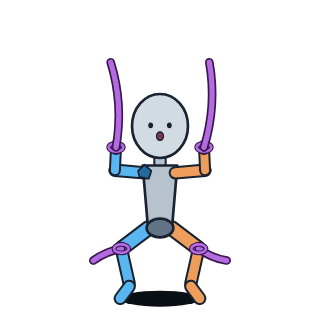 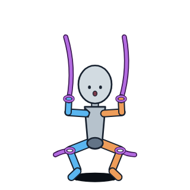 一覧 1 | 吊られて立つ | 両手を頭の上に上げる | 足を開く | 両手首（上から吊る）・両膝（左右） | 体が上下に揺れる。沈むと腕が伸びきる |
floor_hold 床に押さえられる
書くこと：押さえつけているもの（何・色・形）
ゲームでこれをする魔物：灰冠の粘魔・絹輪ワーム・水妖・灰冠の従者・石の番兵
| モーション | ポーズ（ポーズ一覧の番号） | 体勢 | 腕 | 脚 | 押さえ | 動き |
|---|---|---|---|---|---|---|
押されて尻もちをつき、仰向けに倒れるM16 | 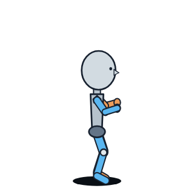     一覧 2 | 立つ → 仰向け | 前に出す → 後ろにつく | よろける | なし（前から押されるだけ） | 押されてよろける → 尻もち → 仰向けに倒れる |
仰向けで両手首を頭の上に押さえられ、脚をばたつかせるM17 |  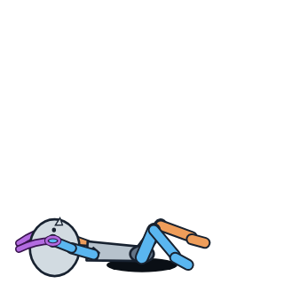 一覧 2 | 仰向け | 両手を頭の上へ | ばたつかせる | 両手首（頭の上の床） | 脚を片方ずつばたつかせる。腰をひねる。顔をそむける |
仰向けで手首を押さえられ、立てた膝を左右へ引かれるM18 |  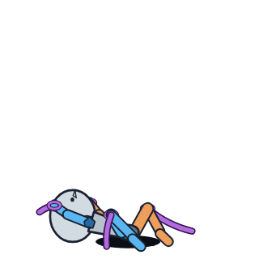 一覧 2 | 仰向け | 両手を頭の上へ | 立てた膝を左右へ引かれる | 両手首（床）・両膝（左右） | 膝を閉じようとして体をよじる |
うつ伏せで押さえられ、脚をばたつかせてもがくM20 | 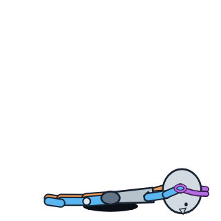  一覧 2 | うつ伏せ | 両手を頭の先へ | 膝から下を跳ね上げる | 両手首（頭の先の床） | 脚を片方ずつ跳ね上げてもがく。顔は横向き |
膝と胸を床について、体が前後に揺れるM21 |   一覧 2 | 膝と胸を床につける | 両手を頭の先へ | 膝をつく | 両手首（頭の先の床） | 体が前後に揺れる |
仰向けで押さえられたまま全身がこわばるM41 | 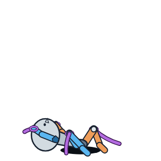   一覧 5 | 仰向け | 両手を頭の上へ | 立てた膝 | 両手首（床）・両膝（左右） | 全身に力が入る → 背中が反る → 力が抜ける |
floor_sway 床に押さえられたまま体が揺れる
書くこと：押さえているもの（何・色・形）
ゲームでこれをする魔物：灰冠の粘魔・絹輪ワーム・水妖・灰冠の従者・石の番兵
| モーション | ポーズ（ポーズ一覧の番号） | 体勢 | 腕 | 脚 | 押さえ | 動き |
|---|---|---|---|---|---|---|
仰向けで押さえられたまま、体が前後に揺れるM19 | 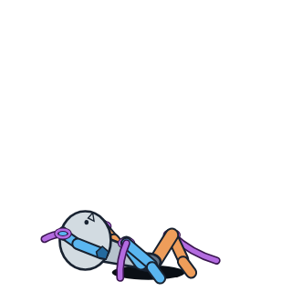 一覧 2 | 仰向け | 両手を頭の上へ | 立てた膝 | 両手首（床）・両膝（左右） | 体全体が頭の方へずれては戻る |
hug_behind 後ろから抱えられる
書くこと：後ろから抱えているもの
ゲームでこれをする魔物：まだ決まっていない
| モーション | ポーズ（ポーズ一覧の番号） | 体勢 | 腕 | 脚 | 押さえ | 動き |
|---|---|---|---|---|---|---|
後ろから腕ごと胴を抱きすくめられ、もがくM30 |   一覧 2 | 立つ | 体の横に押さえつけられる | 足を交互に蹴る | 両肩・両肘（後ろから抱えられる） | 身をよじる。足を蹴る。振り返る |
face_close 相手に顔を寄せられる
書くこと：顔を寄せてくる相手（下絵には描いていない）
ゲームでこれをする魔物：まだ決まっていない
| モーション | ポーズ（ポーズ一覧の番号） | 体勢 | 腕 | 脚 | 押さえ | 動き |
|---|---|---|---|---|---|---|
顔を寄せられて押し返そうとするM23 | 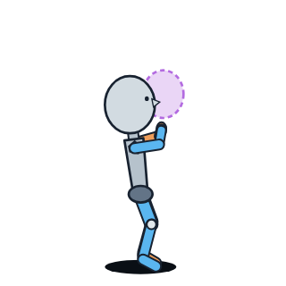 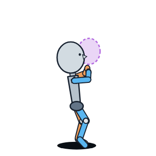 一覧 2 | 立つ | 両手で相手を押し返す | 立つ | 口元 | 両手で相手を押し返す。体をひねる（相手は下絵にない） |
顔を寄せられたまま全身がこわばり、膝が崩れるM24 |   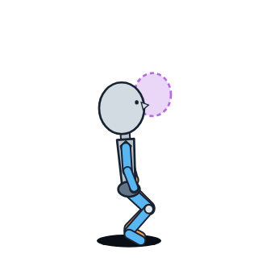 一覧 5 | 立つ | 押し返す → ぱっと開く → だらりと下がる | 爪先が伸びる → 膝が内に崩れる | 口元 | 全身に力が入る → 両手がぱっと開く → 膝が崩れる |
爪先立ちで相手に身を寄せるM25 |   一覧 2 | 爪先立ち | 両腕を相手の首に回す | 爪先立ち | 口元 | 首をかしげて身を寄せる |
small_cling 小さな生き物がくっつく
書くこと：体の前にくっつく小さな生き物（3匹）
ゲームでこれをする魔物：吸着羽虫（3匹）
| モーション | ポーズ（ポーズ一覧の番号） | 体勢 | 腕 | 脚 | 押さえ | 動き |
|---|---|---|---|---|---|---|
くっつかれたまま座り込んで息をするM36 |  一覧 6 | 座り込む | 膝の上 | 座る | 体の前（3匹） | 肩で息をする。ときどき跳ねて手が膝から離れる |
くっつかれたまま立ち上がるM37 | 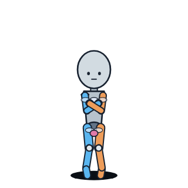 一覧 6 | 立つ | 胸を押さえる | 立つ | 体の前（3匹） | 立ち上がって胸を押さえる |
体の前にくっついた小さな生き物を剥がそうとするM38 |    一覧 2 | 立つ | 手で引き剥がそうとする → お腹に手 | 膝を閉じる | 体の前（胸の左右とお腹の下、3匹） | 見下ろして気づく → 剥がそうとして弾かれる → すくむ |
くっつかれたまま全身がこわばり、座り込むM39 |  一覧 5 | 立つ → 座り込む | 後ろへ振る | 爪先立ち | 体の前（3匹） | 背中が反る → 座り込む |
くっつかれたまま、振り払うのをやめるM40 |  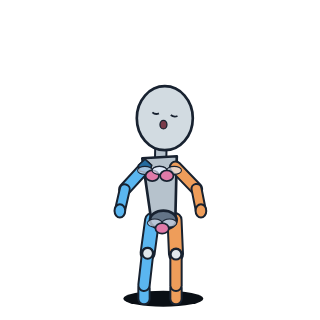 一覧 2 | 立つ | 腕を開いて下げる | 立つ | 体の前（3匹） | 腕を下ろす。頭を後ろへ倒す。体をゆっくり揺らす |
sink 柔らかい塊に足が沈む
書くこと：床の柔らかい塊
ゲームでこれをする魔物：艶沼ナメクジ・鏡面スライム
| モーション | ポーズ（ポーズ一覧の番号） | 体勢 | 腕 | 脚 | 押さえ | 動き |
|---|---|---|---|---|---|---|
柔らかい塊に足元から腰まで沈んでいくM42 |  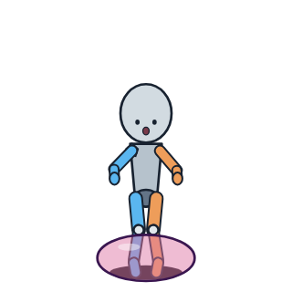 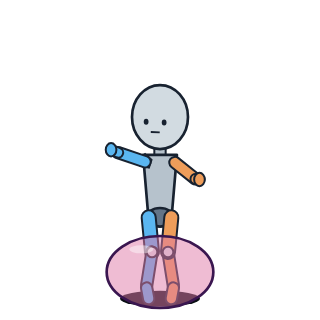 一覧 3 | 立つ | 広げて釣り合いを取る | 足元 → 膝 → 太ももまで沈む | 足元から太もも（床の塊の中） | 下を見る。片脚を抜こうとするが抜けない |
腰まで沈んだまま、上体をひねって抜け出そうとするM43 | 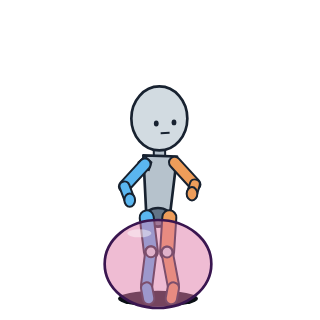 一覧 3 | 腰まで埋まる | 片手ずつ塊を押す | 動かない | 腰から下（塊の中） | 上体をひねって抜け出そうとする |
腰まで塊に沈んだまま、ときどき体が跳ねるM44 |  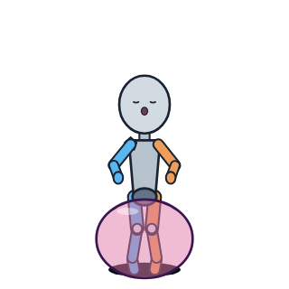 一覧 3 | 腰まで埋まる | 両手を塊につく | 動かない | 腰から下（塊の中） | 両手を塊につく。ときどき体がびくっと跳ね、背中が反る |
腰まで沈んだまま全身がこわばり、前へ崩れるM45 | 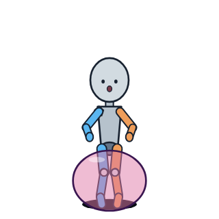 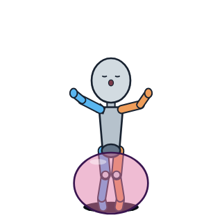 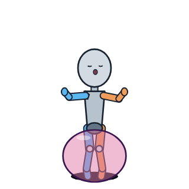 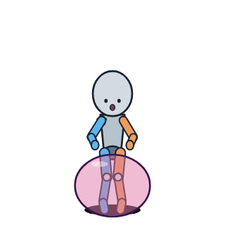 一覧 5 | 腰まで埋まる | 上と外へ投げ出す → 塊の上にのせる | 動かない | 腰から下（塊の中） | 背中が反る → 塊の上に前へ崩れる |
coil 胴に巻きつかれる
書くこと：胴に巻きついているもの
ゲームでこれをする魔物：糸繰り蜘蛛・誘い茸・粘花・影の手（罠）
| モーション | ポーズ（ポーズ一覧の番号） | 体勢 | 腕 | 脚 | 押さえ | 動き |
|---|---|---|---|---|---|---|
腕ごと胴に巻きつかれ、締めつけられるM46 | 一覧 3 | 立つ | 胴と一緒に巻かれる | 立つ | 胴（胸・お腹・腰に巻きつく） | 締めつけられると背中が反る。緩むと息をつく |
巻きつかれたまま全身がこわばり、力が抜けるM47 | 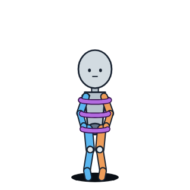   一覧 5 | 立つ | 胴と一緒に巻かれる | 爪先が伸びる → 膝が内に入る | 胴（胸・お腹・腰に巻きつく） | 強く反る → 力が抜けて支えられる |
caught つかまれる
書くこと：つかまれたときの顔・体の様子（つかむものは、モーションごとの欄に書く）
| モーション | ポーズ（ポーズ一覧の番号） | 体勢 | 腕 | 脚 | 押さえ | 動き |
|---|---|---|---|---|---|---|
足首をつかまれて後ろへ引かれ、よろけて四つん這いになるM48 |     一覧 3 | 立つ → 四つん這い | 振り回す → 両手をつく | 片足跳び → 片膝をつく | 左の足首（後ろから） | 足首をつかまれ後ろへ引かれる → 前のめり → 倒れる（真横から見た絵） |
拘束を振りほどき、よろけてから構え直すM49 |   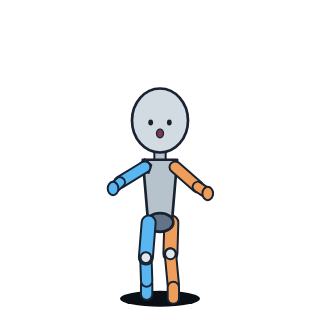 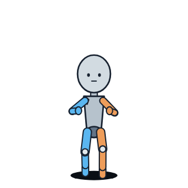 一覧 3 | しゃがむ → 立つ | 大きく広げる → 構える | 一歩よろける | はじめだけ | 力をためる → 振りほどく → よろける → 構え直す |
捕まった瞬間にびくっと跳ね、捕まった所を見下ろすM59 |  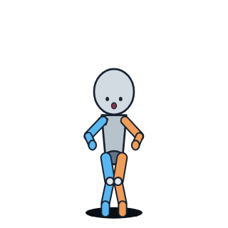 一覧 3 | 構えて立つ | 構える | 立つ | どこか1か所 | 捕まってびくっと跳ねる → 捕まった所を見下ろす |
斥候：尻尾をつかまれて跳び上がり、手を後ろへやるM62 |    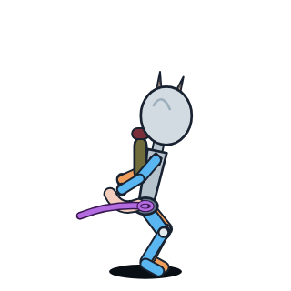 一覧 3 | 立つ | 両手を後ろへやる | 跳び上がって爪先立ち → 膝が内に崩れる | 尻尾（後ろから） | 尻尾をつかまれて跳び上がる → 振り返る → 引っぱり返す（真横から見た絵） |
daze ぼんやりする
書くこと：ぼんやりしたときの顔・体の様子（目の前の何か・胞子・泡は、モーションごとの欄に書く）
| モーション | ポーズ（ポーズ一覧の番号） | 体勢 | 腕 | 脚 | 押さえ | 動き |
|---|---|---|---|---|---|---|
見つめられて動けず、棒立ちのまま小さく頷くM51 |  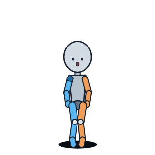 一覧 4 | 棒立ち | だらりと下げる | 立つ | なし | 目の前の何かを見つめたまま、ゆっくり頷く。唇が動く |
胞子を吸い込み、口を覆って顔をそむけ、膝が内に折れるM52 | 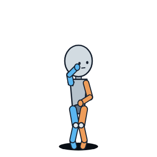 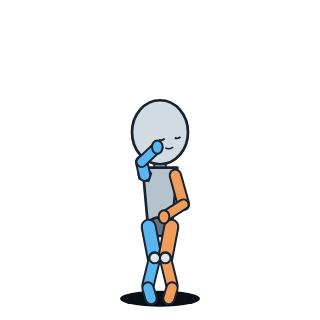 一覧 4 | 立つ → 少し前屈み | 口を手で覆う | 膝が内に折れる | なし | 顔をそむける → 吸い込んで咳き込む |
自分の体を抱いて小刻みに震え、ときどき跳ねるM53 | 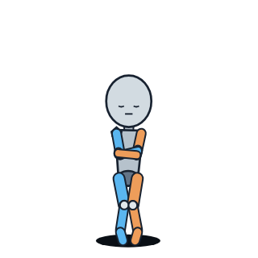 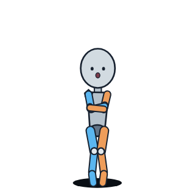 一覧 4 | 立つ | 自分の体を抱く | 立つ | なし | 肩をすくめて小刻みに震える。ときどき跳ねる |
泡に包まれて床から浮き、体を丸めて口をぱくぱくさせるM54 | 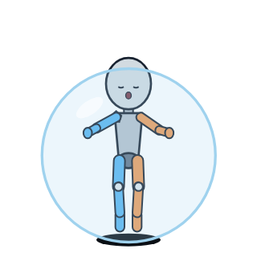 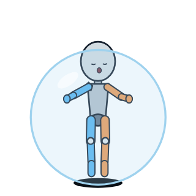 一覧 4 | 泡の中で浮く。少し丸まる | 手のひらを泡の内側につく | 床から浮く | 全身（泡の中） | 口をぱくぱくさせる |
ぼーっと立ち尽くし、首をかしげてゆらゆら揺れるM55 | 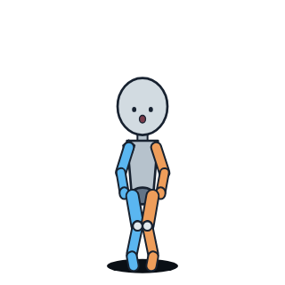  一覧 4 | 立ち尽くす | だらりと下げる | 立つ | なし | ぼーっとして、首を左右にかしげて揺れる |
思わず片手を伸ばして一歩寄り、手を胸に引っ込めるM56 | 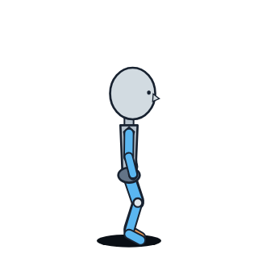   一覧 4 | 立つ | 片手を伸ばす → 胸に引っ込める | 一歩寄る | なし | 何かに思わず手を伸ばす → はっとして目をそらす（真横から見た絵） |
drift ふらっと寄る・ポーズ
書くこと：顔・様子（押さえているものはない）
| モーション | ポーズ（ポーズ一覧の番号） | 体勢 | 腕 | 脚 | 押さえ | 動き |
|---|---|---|---|---|---|---|
片手を胸、片手を太ももに当てて立つポーズM26 |  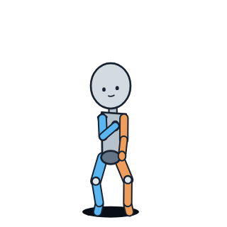 一覧 4 | 立つ | 片手は胸、片手は太もも | 足を開いて立つ | なし | 体をゆっくり揺らす。首をかしげて見下ろす |
ふらっと一歩寄ってしまい、はっとするM50 |   一覧 4 | 立つ → 前屈み | お腹を押さえる | 一歩前へ出てしまう | なし | 一歩前へ寄ってしまう → はっとして前屈みになる |
hold_voice 声をこらえる
書くこと：顔・体の様子
| モーション | ポーズ（ポーズ一覧の番号） | 体勢 | 腕 | 脚 | 押さえ | 動き |
|---|---|---|---|---|---|---|
魔法使い：機械の手で口を押さえ、声を出さずに耐えるM60 | 一覧 4 | 立つ | 機械の手で自分の口を押さえる | 膝を閉じる | なし | 声を出さずに耐える。震えを飲み込み、手を強く押し当てる |
魔法使い：口を押さえたまま体を丸め、片膝をつくM61 |   一覧 5 | 立つ → 片膝をつく | 口を押さえる → 杖にすがる | 膝を閉じる → 片膝 | なし | 体を丸めて肩をすくめる → 杖にすがって片膝をつく |
panel_flip 服の前垂れがめくれかける
書くこと：顔・体の様子
| モーション | ポーズ（ポーズ一覧の番号） | 体勢 | 腕 | 脚 | 押さえ | 動き |
|---|---|---|---|---|---|---|
ヒーラー：めくれかけた前垂れを押さえ、顔を背けるM65 |  一覧 4 | 立つ | 腕を胸の前に当てて押さえる | 立つ | なし | 胸の前の前垂れがめくれかける → びくっとして押さえる → 顔を赤くして背ける |
stiffen 全身がこわばる
書くこと：こわばるときの顔・体の様子（ほかの欄の言葉と一緒に入る）
| モーション | ポーズ（ポーズ一覧の番号） | 体勢 | 腕 | 脚 | 押さえ | 動き |
|---|---|---|---|---|---|---|
全身がこわばって爪先立ち、そのあと力が抜けるM10 | 一覧 5 | 立つ | 後ろ手 | 足を開く | 両手首・両膝（左右） | 全身に力が入る → 爪先立ち、脚が突っ張る → 力が抜ける |
背中を反らせてこわばり、そのあと力が抜けるM11 | 一覧 5 | 立つ | 後ろ手 | 立つ | 両手首 | 背中を反らす → 爪先立ち → 前へ崩れる |
顔を寄せられたまま全身がこわばり、膝が崩れるM24 | 一覧 5 | 立つ | 押し返す → ぱっと開く → だらりと下がる | 爪先が伸びる → 膝が内に崩れる | 口元 | 全身に力が入る → 両手がぱっと開く → 膝が崩れる |
膝を外へ開いて震えるM27 |  一覧 5 | 立つ | だらりと下げる | 膝を外へ開く | なし | 膝が小刻みに震える。頭が後ろへ倒れる |
立ったまま全身がこわばり、座り込むM28 |  一覧 5 | 立つ → 座り込む | 胸とお腹を押さえる | 爪先立ち → 膝が崩れる | なし | こらえる → 反って爪先立ち → 座り込む |
くっつかれたまま全身がこわばり、座り込むM39 | 一覧 5 | 立つ → 座り込む | 後ろへ振る | 爪先立ち | 体の前（3匹） | 背中が反る → 座り込む |
仰向けで押さえられたまま全身がこわばるM41 | 一覧 5 | 仰向け | 両手を頭の上へ | 立てた膝 | 両手首（床）・両膝（左右） | 全身に力が入る → 背中が反る → 力が抜ける |
腰まで沈んだまま全身がこわばり、前へ崩れるM45 | 一覧 5 | 腰まで埋まる | 上と外へ投げ出す → 塊の上にのせる | 動かない | 腰から下（塊の中） | 背中が反る → 塊の上に前へ崩れる |
巻きつかれたまま全身がこわばり、力が抜けるM47 | 一覧 5 | 立つ | 胴と一緒に巻かれる | 爪先が伸びる → 膝が内に入る | 胴（胸・お腹・腰に巻きつく） | 強く反る → 力が抜けて支えられる |
魔法使い：口を押さえたまま体を丸め、片膝をつくM61 | 一覧 5 | 立つ → 片膝をつく | 口を押さえる → 杖にすがる | 膝を閉じる → 片膝 | なし | 体を丸めて肩をすくめる → 杖にすがって片膝をつく |
斥候：全身がこわばって尻尾が逆立ち、膝が崩れるM63 |  一覧 5 | 立つ → 崩れる | ベルトを握る | 爪先立ち → 膝が崩れる | なし | 爪先立ち、尻尾と耳が立つ → 膝が崩れ、尻尾と耳が下がる |
ヒーラー：首を振って拒みながらこわばり、崩れるM66 | 一覧 5 | 立つ → 床に崩れる | 胸をかばう | 爪先立ち → 崩れる | なし | 首を横に振る → 反って爪先立ち、胸の前をかばう → 崩れる |
limp 力が抜けてぐったりする
書くこと：力が抜けたあとの顔・体の様子
| モーション | ポーズ（ポーズ一覧の番号） | 体勢 | 腕 | 脚 | 押さえ | 動き |
|---|---|---|---|---|---|---|
力が抜けて、拘束にもたれてうなだれるM12 | 一覧 6 | 立ったままぶら下がる | 後ろ手 | 足を開く | 両手首・両膝（左右） | うなだれて肩で息をする |
力が抜けて前へ崩れ、うなだれるM13 | 一覧 6 | 前へ崩れて立つ | 後ろ手 | 膝を内に寄せる | 両手首 | うなだれて肩で息をする |
脚を左右に折って座り、息を整えるM29 |  一覧 6 | 女の子座り（脚を左右に折る） | 膝の上 | 座る | なし | 肩で息をする |
仰向けで力が抜け、肩で息をするM31 |   一覧 6 | 仰向け | 投げ出す | 膝を倒す | なし | 顔を横に向けて息をする |
相手が離れたあと、ふらついて息を整えるM33 | 一覧 6 | ふらついて立つ | だらりと下げる | 膝に力が入らない | なし（相手が離れたあと） | うなだれて肩で息をする |
くっつかれたまま座り込んで息をするM36 | 一覧 6 | 座り込む | 膝の上 | 座る | 体の前（3匹） | 肩で息をする。ときどき跳ねて手が膝から離れる |
come_to 我に返って立ち直る
書くこと：我に返るときの顔・様子
| モーション | ポーズ（ポーズ一覧の番号） | 体勢 | 腕 | 脚 | 押さえ | 動き |
|---|---|---|---|---|---|---|
脱力から我に返り、立ち直るM14 | 一覧 6 | 立つ | 後ろ手 | 立つ | 両手首 | 我に返る → 顔を上げて立ち直る |
仰向けから起き上がるM22 | 一覧 6 | 仰向け → 立つ | 肘をつく → 手をつく | 膝を立てる → しゃがむ → 立つ | なし | 起き上がって立つ（真横から見た絵） |
仰向けで我に返り、膝を閉じて体を起こしかけるM32 |  一覧 6 | 仰向け | 床につく | 膝を閉じる | なし | 膝を閉じて体を起こしかける |
我に返って口元をぬぐい、一歩下がるM34 |     一覧 6 | 立つ | 手の甲で口をぬぐう。片手を前に出す | 一歩下がる | なし | 我に返る → 口をぬぐう → 下がって構える |
座り込んだ所から立ち上がるM35 |   一覧 6 | 女の子座り → 立つ | 前に手をつく | 膝立ち → 片膝 → 立つ | なし | 立ち上がる |
くっつかれたまま立ち上がるM37 | 一覧 6 | 立つ | 胸を押さえる | 立つ | 体の前（3匹） | 立ち上がって胸を押さえる |
collapse 倒れる
書くこと：倒れるときの様子
| モーション | ポーズ（ポーズ一覧の番号） | 体勢 | 腕 | 脚 | 押さえ | 動き |
|---|---|---|---|---|---|---|
つまずいて手と膝をつき、起き上がるM57 |    一覧 7 | 歩く → 四つん這い → 立つ | 前に出す → 手をつく | つまずく → 膝をつく | なし | つまずいて転ぶ → 顔を上げる → 立ち上がる（真横から見た絵） |
力尽きて膝から崩れ、うつ伏せに倒れるM58 |   一覧 7 | 立つ → 膝立ち → うつ伏せ | だらりと下げる | 膝から崩れる | なし | 力尽きて倒れ、動かなくなる（真横から見た絵） |
6. モーションごとの欄（motionWords）
同じ場面の種類の中で、押さえているものがモーションごとに違うものは、こちらに書きます。
| キー | モーション | 書くこと | 動き |
|---|---|---|---|
| M48 | 足首をつかまれて後ろへ引かれ、よろけて四つん這いになる | 足首をつかむもの（這い寄る手） | 足首をつかまれ後ろへ引かれる → 前のめり → 倒れる（真横から見た絵） |
| M62 | 斥候：尻尾をつかまれて跳び上がり、手を後ろへやる | 尻尾をつかむもの | 尻尾をつかまれて跳び上がる → 振り返る → 引っぱり返す（真横から見た絵） |
| M49 | 拘束を振りほどき、よろけてから構え直す | 振りほどく前に縛っていたもの（はじめのコマだけ見える） | 力をためる → 振りほどく → よろける → 構え直す |
| M59 | 捕まった瞬間にびくっと跳ね、捕まった所を見下ろす | 捕まえたもの（どこか1か所） | 捕まってびくっと跳ねる → 捕まった所を見下ろす |
| M51 | 見つめられて動けず、棒立ちのまま小さく頷く | 見つめている目（凝視の眼） | 目の前の何かを見つめたまま、ゆっくり頷く。唇が動く |
| M52 | 胞子を吸い込み、口を覆って顔をそむけ、膝が内に折れる | 胞子（ルマネ胞子球・誘い茸） | 顔をそむける → 吸い込んで咳き込む |
| M53 | 自分の体を抱いて小刻みに震え、ときどき跳ねる | 鱗粉や冷気（夢鱗蛾・漂い霊） | 肩をすくめて小刻みに震える。ときどき跳ねる |
| M54 | 泡に包まれて床から浮き、体を丸めて口をぱくぱくさせる | 泡（泡吹き貝） | 口をぱくぱくさせる |
| M55 | ぼーっと立ち尽くし、首をかしげてゆらゆら揺れる | なし（様子だけ） | ぼーっとして、首を左右にかしげて揺れる |
| M56 | 思わず片手を伸ばして一歩寄り、手を胸に引っ込める | 手を伸ばす先の何か | 何かに思わず手を伸ばす → はっとして目をそらす（真横から見た絵） |
7. キャラクターの欄（charWords）
見た目は2.で入れてあります。足したいもの（例：いつもの表情の癖）があれば書きます。なければ ""。
aria：アリア（戦士）scout：斥候（シーフ）mage：魔法使いhealer：ヒーラー
8. 答えの形
この形の JSON を、コードブロック1つで返してください。キーは変えないでください。
{
"words": {
"restrained": "",
"restrained_sway": "",
"floor_hold": "",
"floor_sway": "",
"hug_behind": "",
"face_close": "",
"small_cling": "",
"sink": "",
"coil": "",
"caught": "",
"daze": "",
"drift": "",
"hold_voice": "",
"panel_flip": "",
"stiffen": "",
"limp": "",
"come_to": "",
"collapse": ""
},
"motionWords": {
"M48": "",
"M62": "",
"M49": "",
"M59": "",
"M51": "",
"M52": "",
"M53": "",
"M54": "",
"M55": "",
"M56": ""
},
"charWords": {
"aria": "",
"scout": "",
"mage": "",
"healer": ""
}
}